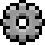
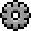
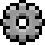

Addon说明
x
ULANG框架
 

ULANG框架（前置）版本：beta V0.1.0
ULANG以MinecraftBE版Addon(附加包)的Script Engine(脚本引擎)为内核，宗旨为创造
更多方便快捷的接口以及UI部分(主要是菜单型UI,就比如现在这种)，以弥补官方脚本引擎接口的不足
口的不足之处。
查看Addon协议

ULANG框架（前置）版本：beta V0.1.0
ULANG以MinecraftBE版Addon(附加包)的Script Engine(脚本引擎)为内核，宗旨为创造
更多方便快捷的接口以及UI部分(主要是菜单型UI,就比如现在这种)，以弥补官方脚本引擎接口的不足
口的不足之处。